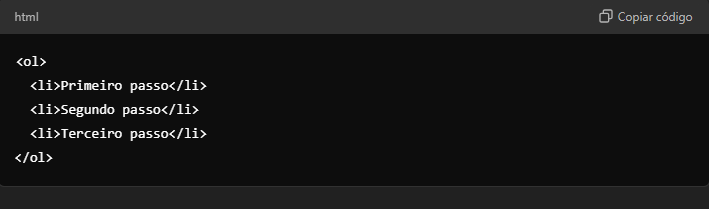
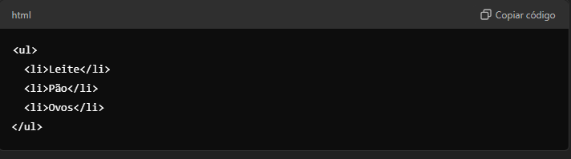

INSTRUÇÕES: Neste índice você deve colocar os tópicos que mais entendeu. Estes apenas são sugestões.
A história dos computadores é fascinante, principalmente porque mostra como a tecnologia evoluiu rapidamente em um período relativamente curto. Quando comecei a estudar esse assunto, percebi que os primeiros computadores eram enormes, ocupavam salas inteiras, e eram bastante limitados em comparação com os dispositivos que usamos hoje. Um bom exemplo é o ENIAC, considerado o primeiro computador eletrônico de uso geral. Ele foi construído na década de 1940 e podia realizar cálculos complexos, mas exigia várias pessoas para operá-lo.
Com o tempo, os computadores foram ficando menores e mais potentes, principalmente após a invenção do transistor nos anos 1950, que substituiu as válvulas, e do microprocessador nos anos 1970. Esses avanços tornaram possível o surgimento dos computadores pessoais, que revolucionaram o modo como trabalhamos, nos comunicamos e até nos divertimos.
Quando comecei a aprender sobre clients no contexto de redes e sistemas, percebi que eles desempenham um papel fundamental na comunicação entre dispositivos. Basicamente, um client é qualquer dispositivo ou software que solicita serviços ou informações de um servidor. Esse conceito é a base do modelo cliente-servidor, que é muito utilizado na internet.
Por exemplo, quando abrimos o navegador e acessamos um site, nosso navegador está funcionando como um client. Ele envia uma solicitação para o servidor do site (onde as informações estão armazenadas), e o servidor responde enviando os dados que vemos na tela, como imagens, textos e vídeos.
O que achei mais interessante é que os clients podem ser tanto dispositivos físicos, como um computador ou celular, quanto programas, como navegadores, aplicativos ou até mesmo jogos online. Tudo isso depende de um servidor para funcionar, pois é ele quem processa e fornece os recursos necessários para o client.Um server é basicamente um computador ou programa que fica disponível para atender a várias solicitações ao mesmo tempo. Ele pode armazenar, processar e entregar dados para vários clients ao mesmo tempo. Um exemplo bem comum é quando acessamos um site: o servidor é responsável por armazenar as páginas, imagens e todos os arquivos que formam aquele site e enviá-los ao navegador (que é o client) sempre que alguém fizer uma solicitação. O mais interessante é que existem vários tipos de servers, cada um com uma função específica. Temos, por exemplo:
O conceito de servidor também vai além de máquinas físicas; eles podem ser virtuais, rodando em ambientes de cloud computing (computação em nuvem). Isso significa que um único servidor físico pode hospedar diversos servers virtuais, o que aumenta a eficiência e a escalabilidade.
HTML, uma das primeiras coisas que me chamou atenção foi a simplicidade da estrutura básica. Todo documento HTML segue uma estrutura padronizada, o que facilita tanto a leitura pelo navegador quanto a criação de páginas da web.
Aqui está um exemplo simples da estrutura básica de um HTML:
Agora, explicando cada parte:
Dentro do < body>, você verá tags como:
Esse é um exemplo básico, mas você pode adicionar muito mais elementos, como imagens, listas, tabelas, e até estilos e scripts para criar páginas mais interativas e atrativas.
uma das principais diferenças que aprendi foi entre listas ordenadas e listas não ordenadas. Ambas são utilizadas para organizar informações de forma clara e estruturada, mas cada uma tem suas características e finalidades específicas.
Listas Ordenadas
As listas ordenadas, representadas pela tag < ol>, são usadas quando a sequência dos itens é importante. Por exemplo, quando queremos listar etapas a serem seguidas ou classificações em um concurso, utilizamos uma lista ordenada. Cada item na lista é numerado automaticamente pelo navegador, o que facilita a identificação da ordem. Veja um exemplo:
Neste exemplo, a ordem dos passos é crucial, pois segue uma sequência lógica.
Listas Não Ordenadas
Por outro lado, as listas não ordenadas, representadas pela tag < ul>, são utilizadas quando a ordem dos itens não é relevante. Os itens em uma lista não ordenada são precedidos por marcadores (normalmente círculos ou quadrados), indicando que a sequência não importa. Um exemplo seria listar itens de compras:

Aqui, não há uma ordem específica; todos os itens têm igual importância.
Conclusão
A escolha entre usar uma lista ordenada ou não ordenada depende da natureza das informações que estamos apresentando. Se a ordem é fundamental, optamos por uma lista ordenada. Se não, uma lista não ordenada é mais apropriada.
links para outras páginas que falam sobre estes assuntos. Não esquece de que precisa abrir em outra aba/janela do navegador.